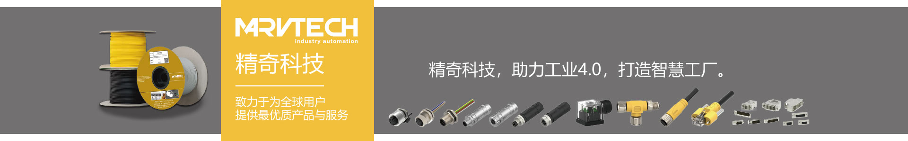

自动化机械设备哪家好？
2019-10-22
自动化机械设备哪家好？
高柔性拖链电缆，设计应用于坦克链拖链或其他类似的便携式部件下的循环往复移动弯曲安装使用。对于不同的使用环境和场合，对高柔性拖链电缆的设计选材也有不同的设计需要。那么对于高柔性的拖链电缆来说，其设计具体有哪些要求呢？
● 高柔性：
拖链系统专用的高柔性电缆，区别于普通柔性电缆，它具有优异的柔软耐弯曲性能，可适用于长时间的循环往复移动弯曲，因此，这类电缆不仅需要柔软，其绝缘、护套的选材也需要具有优异的机械性能，来适应电缆的长时间移动弯曲；

● 弯曲半径：
弯曲半径，主要受到电缆结构及电缆外径的影响，这也使得电缆能够适用于不同的弯曲半径大小的拖链系统。不适用的弯曲半径的拖链壳，会直接影响电缆的使用寿命。嘉柔电缆生产设计的高柔性拖链电缆弯曲半径可达7.5倍电缆外径，电缆适应性强；
● 功能要求：
高柔性拖链电缆，主要作为动力传输、控制连接或柔性信号传输反馈电缆广泛使用，不同的使用功能，对电缆的要求也不相同，像电缆的阻抗性能，抗衰减性能以及抗干扰性能和信号传输稳定性等；
● 环境适应能力：
这类电缆不仅能够应用于常规的室内场合下的拖链、坦克链系统，在室内多油污、具有腐蚀性等环境较为恶劣的场合，以及室外环境下，拖链电缆均被广泛应用，因此，符合环境需求，也是这里电缆的重要设计要求之一。
综上，优质的高柔性拖链电缆，更是从设计之初的选材、工艺，以及整个生产工艺流程来保障电缆的品质。对于工矿企业、工业设备与装置、工业自动化等场合下，高品质的高柔性拖链电缆是十分必要的。